Как пользоваться Телеграм
Телеграм — мессенджер, созданный российским разработчиком для безопасного общения. В статье разберем особенности Телеграма и расскажем, как пользоваться приложением.
| Первоначальные настройки ↓ | Как пользоваться секретными чатами ↓ | |
Преимущества и возможности Телеграм
Телеграм стал популярным благодаря безопасности и функциональности. У приложения множество преимуществ, которых нет в других мессенджерах (WhatsApp, Viber):
- Наличие приложения для Windows, Android, iOS и других систем. Синхронизация между устройствами.
- Создание групповых чатов и Модерация каналов.
- Объем отправляемых файлов до 1,5 Гб, отправка исполняемых файлов и встроенный медиаплеер.
- Приватность общения. Создание секретных чатов с несколькими вариантами защиты: автоматическим удалением сообщений после прочтения, шифрованием с ключами, хранящимися только на устройствах собеседников, запрет пересылки сообщений, создания скриншотов.
После ознакомления с преимуществами Телеграма можно приступать к первоначальной настройке и полноценному использованию приложения.
Первые настройки и общение
Для начала общения нужно произвести первоначальные настройки профиля. Совершите следующие действия:
- Нажмите на кнопку дополнительного меню в левом верхнем углу.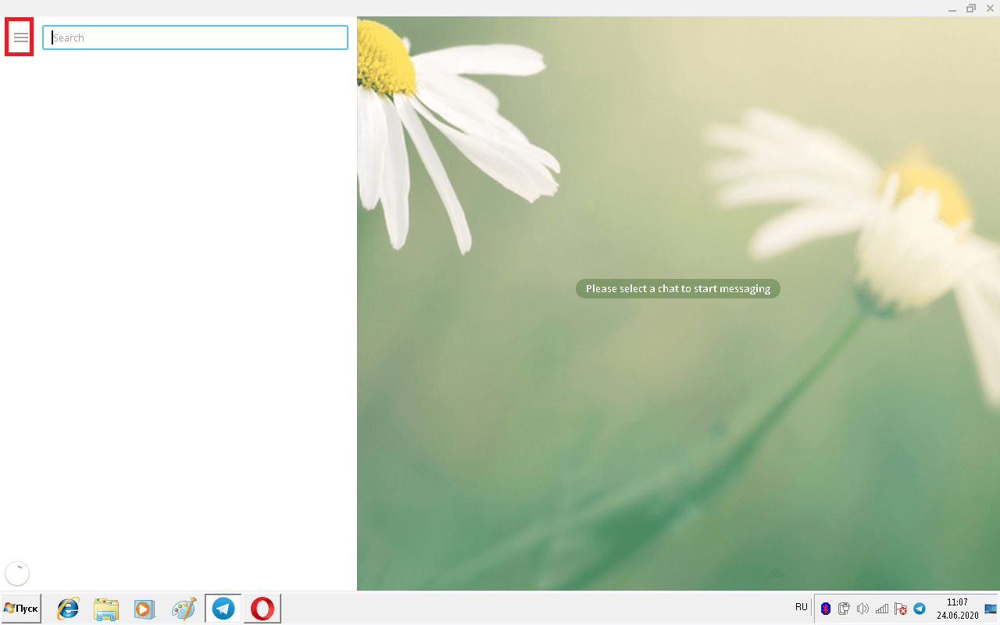
- В открывшемся меню найдите и откройте «Настройки».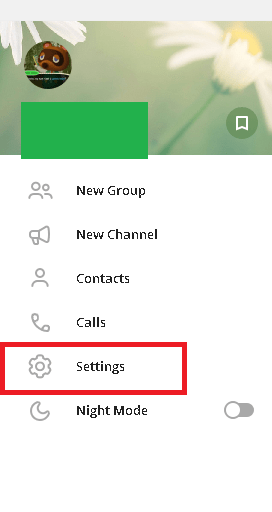
- Откроется окно настроек. Найдите и откройте меню редактирования профиля.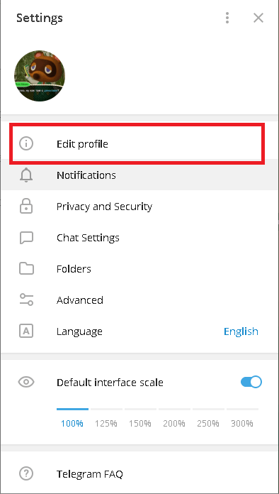
- Откроется меню настройки профиля. Впишите информацию, которую считаете нужной. Позже сможете изменить имя профиля, его логин, номер телефона и аватарку.
- Закройте окно. Изменения отображаются в профиле.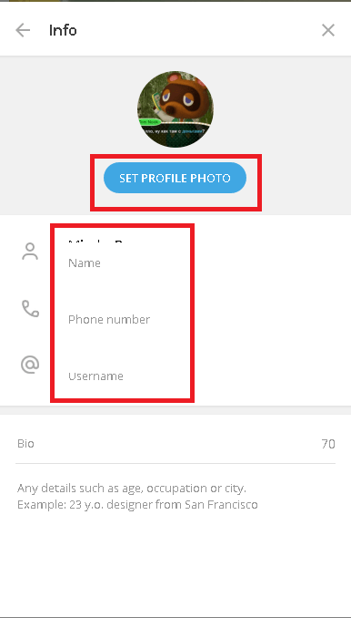
{kind=link}
{kind=link}
{kind=link}
{kind=link}
Следующий шаг — создание первого чата:
- Если в контактах устройства есть телефонные номера людей, которые уже пользуются Телеграмом, после установки приложения чаты с ними появятся автоматически. Если этого не произошло, попросите знакомых отправить сообщение.
- Активные чаты расположены слева. Кликните по имени нужного человека.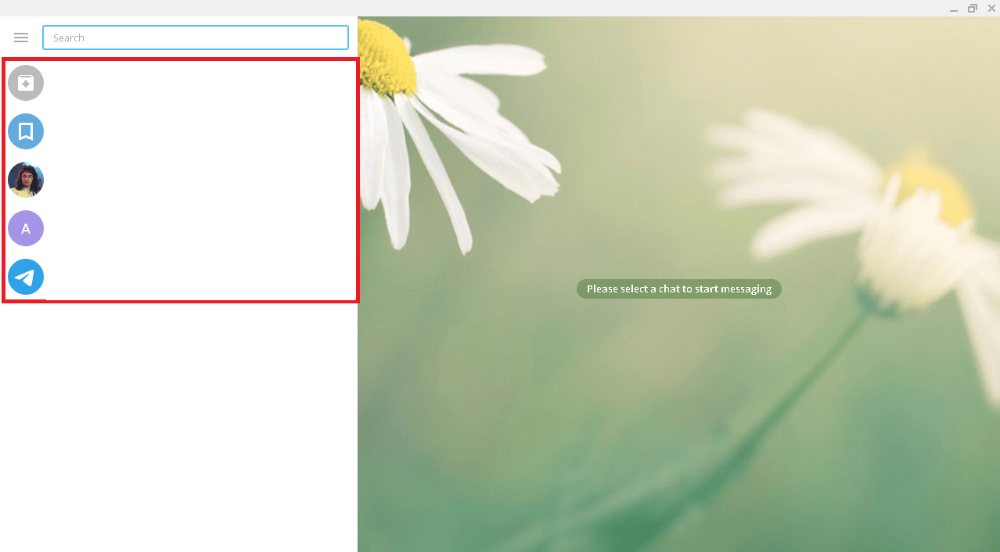
- Откроется окно чата. Теперь в поле снизу напишите первое сообщение или отправьте стикер.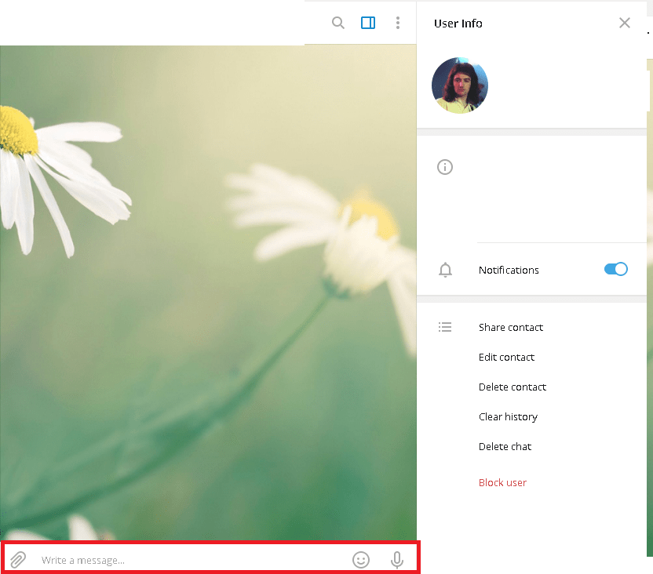
{kind=link}
{kind=link}
Следующий шаг — знакомство с дополнительными функциями Телеграма.
Секретные чаты в Телеграм
В Телеграме есть функция «Секретные чаты», которая обеспечивает безопасность сообщений внутри мессенджера. У секретных чатов есть 3 вида защиты:
- Шифрование сообщений. Сообщения шифруются и расшифровываются мессенджером на лету. Только 2 собеседника владеют ключем шифра. Если другие люди пожелают прочитать сообщение без ключа, оно будет выглядеть как набор букв и цифр. Ключи генерируются автоматически и даже у создателей Телеграма нет доступа к сообщениям;
- Автоматическое удаление сообщений. Настройте секретный чат так, чтобы после прочитанное сообщение автоматически удалялось. После прочтения сообщения другим собеседником, оно исчезнет навсегда после истечения настроенного времени;
- Невозможность переправления сообщений и создания скриншотов. Даже если собеседник решит поделиться сообщениями из секретного чата у него это выйдет только при личной встрече с другим человеком.
Внимание! Создать секретный чат можно только в мобильном приложении, и вот как:
- Откройте дополнительное меню свайпом вправо;
- Найдите и откройте пункт «Создать секретный чат»;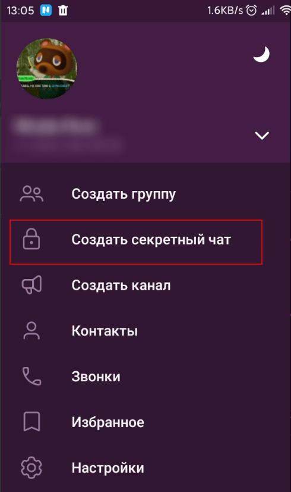
- Откроется список из контактов. Найдите и нажмите на нужного человека;
- После нажатия на контакт создастся секретный чат, который можно настроить и в котором можно общаться без риска что кто-то другой прочтет сообщения.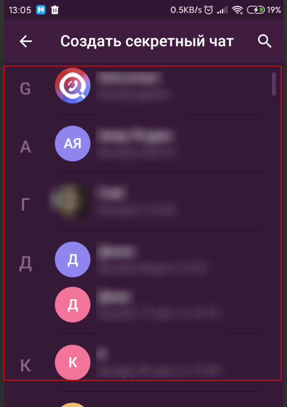
{kind=link}
{kind=link}
Как пользоваться отдельными функциями
Телеграм позволяет не только общаться и отправлять смайлики и стикеры. Поговорим о функциях мессенджера, которые используются постоянно.
Создание группы
В Телеграме предусмотрено создание групповых чатов с числом участников до 200 тыс. человек. Собеседники пишут сообщения, отправляют стикеры, файлы, обращаются к отдельным людям и общаются с друзьями через звонки.
Чтобы создать группу с контактами, совершите следующие действия:
- Вновь откройте дополнительное меню, нажав на кнопку в левом верхнем углу.
- Найдите пункт «Новая группа» в открывшемся меню и нажмите.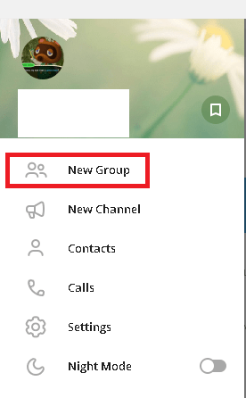
- Откроется окно создания группы. Придумайте имя и добавьте аватарку чата.
- После ввода данных и добавления фотографии нажмите «Далее».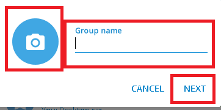
- Откроется меню приглашения людей со списком контактов.
- Выберите нужных собеседников из списка, нажав на имена.
- После отбора участников нажмите на кнопку «Создать». Теперь доступно общение с группой в окне чата.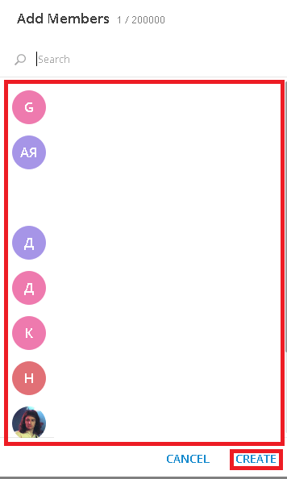
{kind=link}
{kind=link}
{kind=link}
Отправка файлов
Как уже говорилось, в Телеграм возможно отправлять файлы объемом до 1,5 Гб через чаты. Действия будут немного различаться в десктопном и мобильном приложениях.
Десктопное приложение
- Откройте окно с чатом.
- Нажмите на значок скрепки в левом нижнем углу.
- Выберите один или несколько файлов с компьютера или флешки, по желанию подпишите и отправьте. Собеседники получат и смогут скачать документы, изображения и видеофайлы.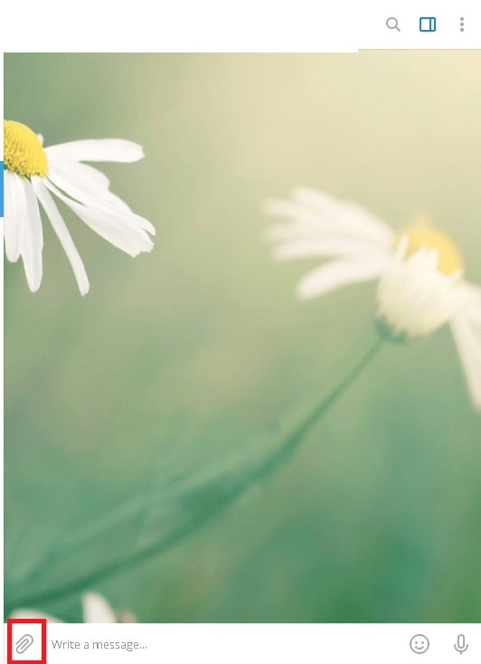
{kind=link}
Мобильное приложение
- Зайдите в чат с нужным собеседником.
- В левом нижнем углу найдите и нажмите иконку в виде скрепки.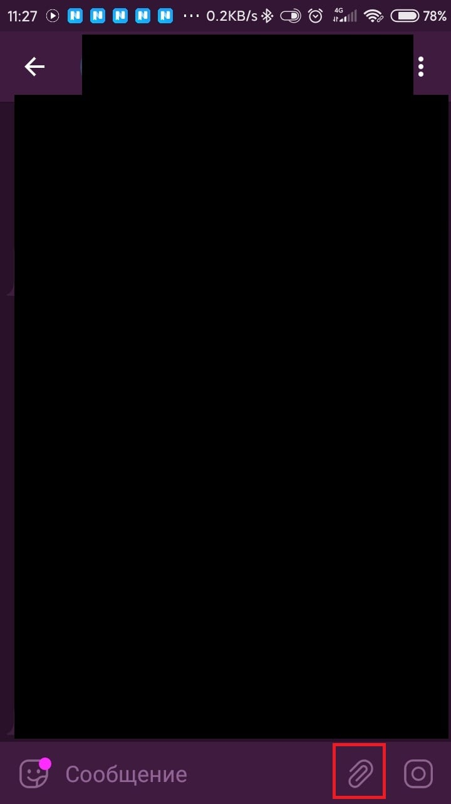
- Выберите вкладку: галерея, файлы, музыка.
- Выберите текстовый файл, картинку или видео для отправки.
- Чтобы отправить несколько файлов, нажмите на кружочки рядом и выделите до 10 нужных.
- Отправьте файлы. Теперь собеседник сможет их увидеть и скачать.
{kind=link}
Каналы в Телеграм
В группах или на каналах Телеграма администраторы регулярно постят информацию, картинки, файлы, видео и создают другой контент. Список каналов доступен на отдельных сайтах, выйти на них можно через поисковик или по приглашению друзей. Информация о том, как найти каналы и подписаться на них, есть на нашем сайте…
много нужных чатов для моей работы
Superski interestno i vaszno
Отличный сервис. Удобно и просто
Полезные чаты для работы
Все круто работает.
доступно написано.?
Очень полезные чаты!)